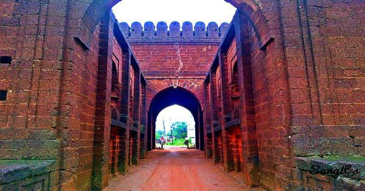

Bishnupur

Bishnupur is a town and a municipality in Bishnupur subdivision of Bankura District in the state of West Bengal, India. It is famous for its terracotta temples Malla Shree Krishna Raslilla and the Baluchari sarees.

HOW TO REACH ?
Nearest Airport:Imphal
Nearest Railway Station:Bishnupur
Nearest Bus Stand:BishnupurBishnupur